You test an individual M’s ability to solve a certain class of logical problems. M gave answers to nine versions of the problem and you coded each as correct (1) or incorrect (0). This is the data:
1, 0, 0, 0, 0, 1, 0, 0, 0
You want to estimate M’s true ability ( p ) using this model: \[
\begin{align}
y_i &\sim Bernoulli(p) \\
p &\sim Uniform(0,1) \\
\end{align}
\]
List the critical assumptions of this model.
Use grid approximation to derive point estimate and 95 % Compatibility Interval (CI, defined as a highest density interval).
Verify that you obtain the same result using the binomial distribution with \(n = 9\), that is, equal to the number of trials (this is McElreath’s approach to his globe tossing data).
Answer Uniform prior. Independent successes. \(p\) is constant (all trials are equally hard).
library(Rlab)
Rlab 4.0 attached.
Attaching package: 'Rlab'
The following objects are masked from 'package:stats':
dexp, dgamma, dweibull, pexp, pgamma, pweibull, qexp, qgamma,
qweibull, rexp, rgamma, rweibull
The following object is masked from 'package:datasets':
precip
p_grid <-seq(from =0, to =1, length.out =1000)prior <-rep(1, times =1000) #we can also use dbeta(p_grid,1,1)likelihood <-dbinom(2, size =9, prob = p_grid)#dbern(c(1, 0, 0, 0, 0, 1, 0, 0, 0),prob = p_grid)posterior <- likelihood * priorplot(p_grid,posterior, type ="l"); abline(v =which.max(posterior)/1000)d <-data.frame( posterior, p_grid,posterior_90 = posterior >quantile(posterior, 0.1))d[min(which(d$posterior_90 ==TRUE)),]$p_grid #THERE WE GO YES
Warning: package 'ggplot2' was built under R version 4.3.3
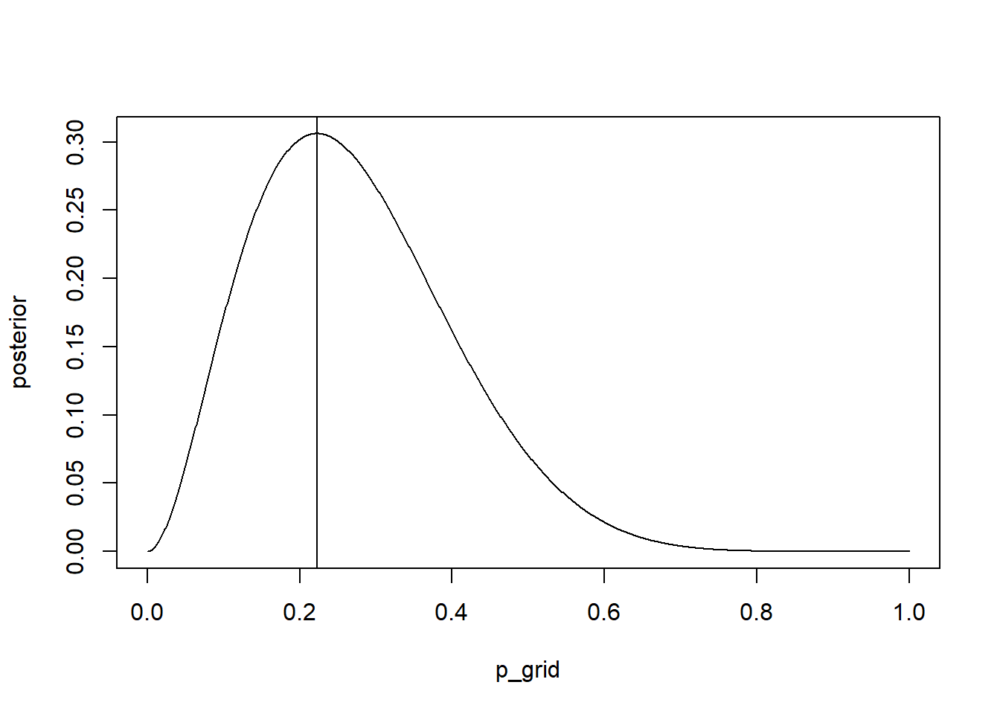
ggplot(d, aes(x = p_grid, y = posterior, color = posterior_90)) +geom_point(size =0.02, alpha =0.5) #ugly
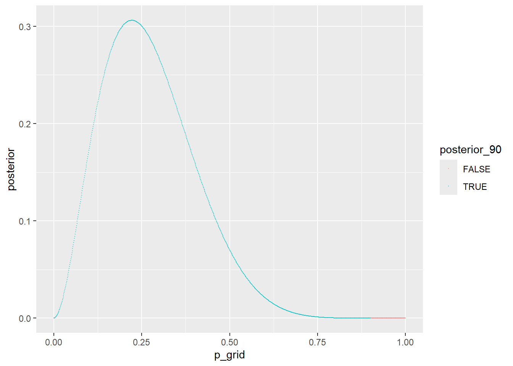
I don’t know how to compute HPDI from grid really… I guess you could use quantile() and then select based on that. I work it out
Exercises attempt
SR2m1
Recall the globe tossing model from the chapter. Compute and plot the grid approximate posterior distribution for each of the following sets of observations. In each case, assume a uniform prior for p. (1) W,W,W (2) W,W,W,L (3) L,W,W,L,W,W,W
Let’s try to trecreate the grid approximation method as a challenge:
g <-20#for granularity#Aprior <-rep(1, times = g)grid <-seq(from =0, to =1, length.out = g)likelihood <-dbinom(3, size =3, prob = grid)posterior_unstandardized <- prior*likelihoodposterior <- posterior_unstandardized /sum(posterior_unstandardized) #normalizeplot(grid,posterior, type ="l", main ="W,W,W")
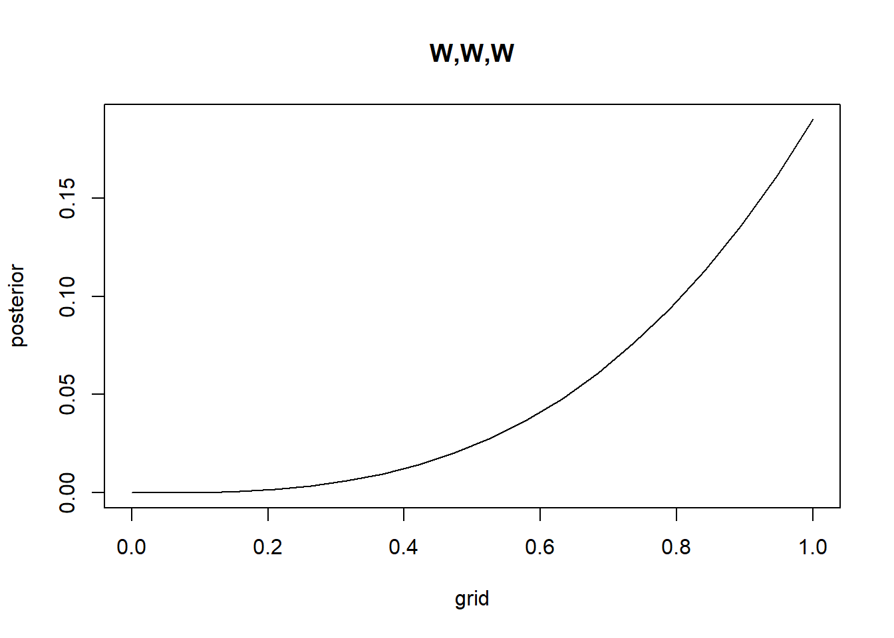
#Bprior <-rep(1, times = g)grid <-seq(from =0, to =1, length.out = g)likelihood <-dbinom(3, size =4, prob = grid)posterior_unstandardized <- prior*likelihoodposterior <- posterior_unstandardized /sum(posterior_unstandardized) #normalizeplot(grid,posterior, type ="l", main ="W,W,W,L")
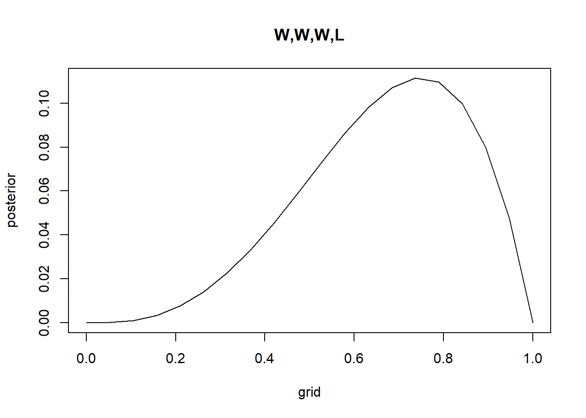
#Cprior <-rep(1, times = g)grid <-seq(from =0, to =1, length.out = g)likelihood <-dbinom(5, size =7, prob = grid)posterior_unstandardized <- prior*likelihoodposterior <- posterior_unstandardized /sum(posterior_unstandardized) #normalizeplot(grid,posterior, type ="l", main ="L,W,W,L,W,W,W")
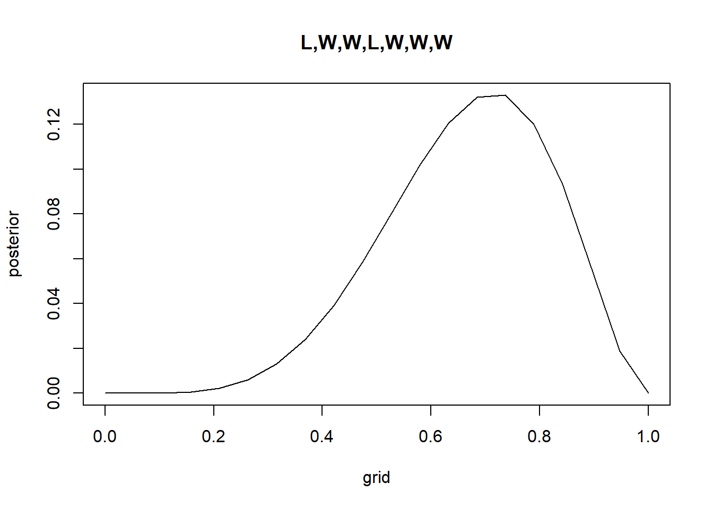
SR2m2
Now assume a prior for p that is equal to zero when p < 0.5 and is a positive constant when p ≥ 0.5. Again compute and plot the grid approximate posterior distribution for each of the sets of observations in the problem just above.
g <-100grid <-seq(from =0, to =1, length.out = g)prior <- (grid <0.5) ==FALSE#actually should be *2 to be a proper pdflikelihood <-dbinom(3, size =3, prob = grid)posterior_unstandardized <- prior*likelihoodposterior <- posterior_unstandardized /sum(posterior_unstandardized) #normalizeplot(grid,posterior, type ="l", main ="W,W,W")
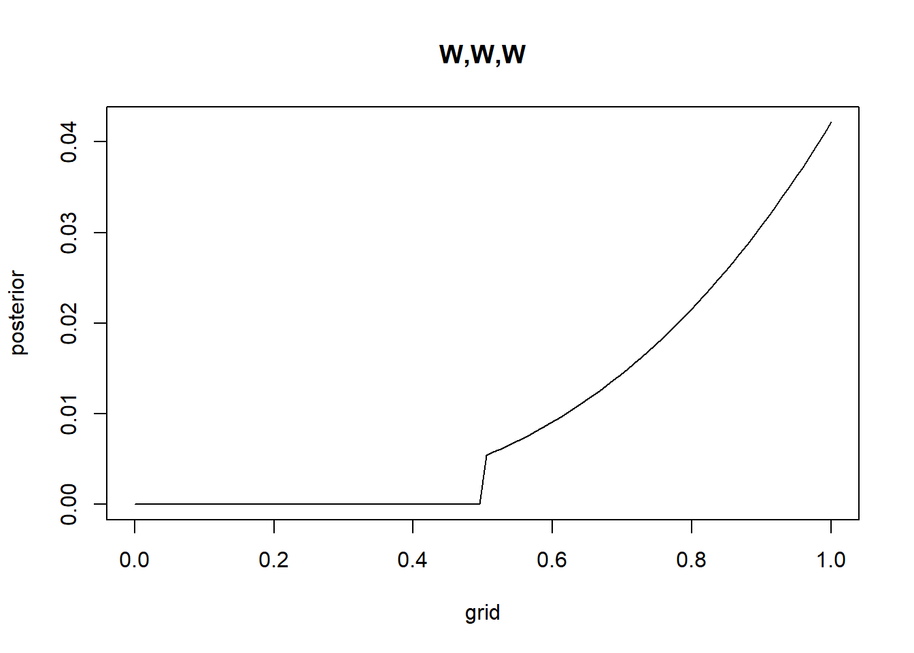
likelihood <-dbinom(3, size =4, prob = grid)posterior_unstandardized <- prior*likelihoodposterior <- posterior_unstandardized /sum(posterior_unstandardized) #normalizeplot(grid,posterior, type ="l", main ="W,W,W,L")
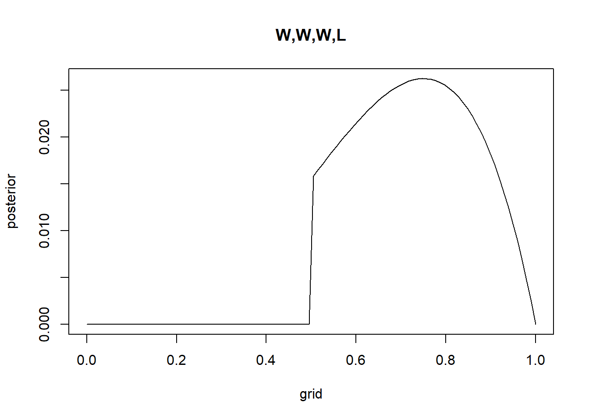
likelihood <-dbinom(5, size =7, prob = grid)posterior_unstandardized <- prior*likelihoodposterior <- posterior_unstandardized /sum(posterior_unstandardized) #normalizeplot(grid,posterior, type ="l", main ="L,W,W,L,W,W,W")
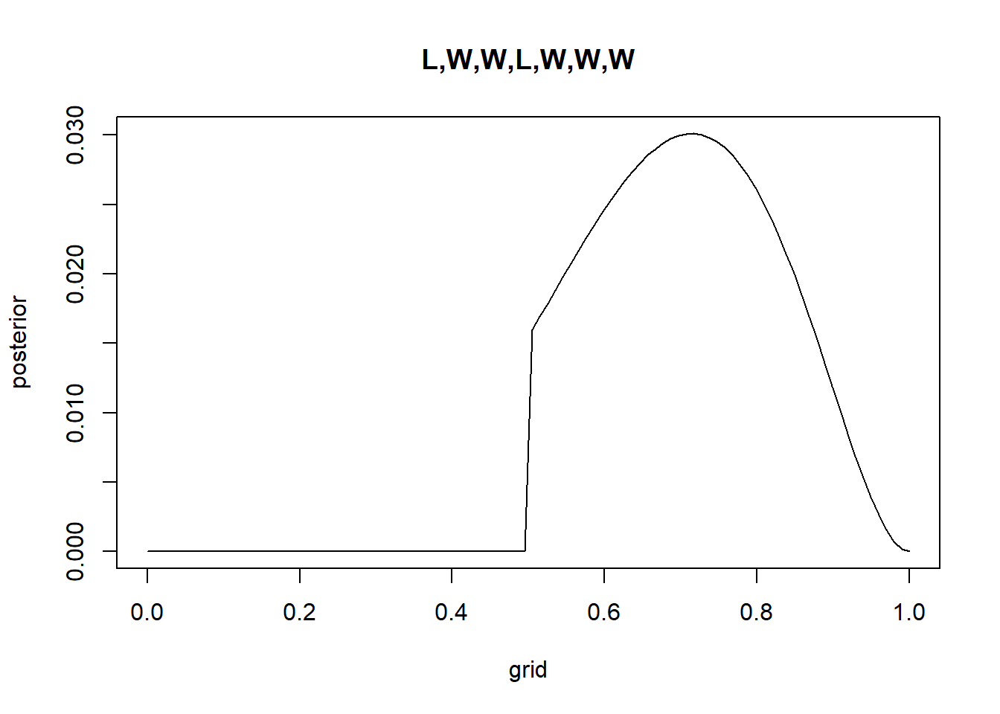
SR3e3
How much posterior probability lies between p = 0.2 and p = 0.8?
A newer version of CmdStan is available. See ?install_cmdstan() to install it.
To disable this check set option or environment variable CMDSTANR_NO_VER_CHECK=TRUE.
Loading required package: posterior
Warning: package 'posterior' was built under R version 4.3.3
This is posterior version 1.6.1
Attaching package: 'posterior'
The following objects are masked from 'package:stats':
mad, sd, var
The following objects are masked from 'package:base':
%in%, match
Loading required package: parallel
rethinking (Version 2.42)
Attaching package: 'rethinking'
The following objects are masked from 'package:Rlab':
dbern, rbern
The following object is masked from 'package:stats':
rstudent
dens(samples)
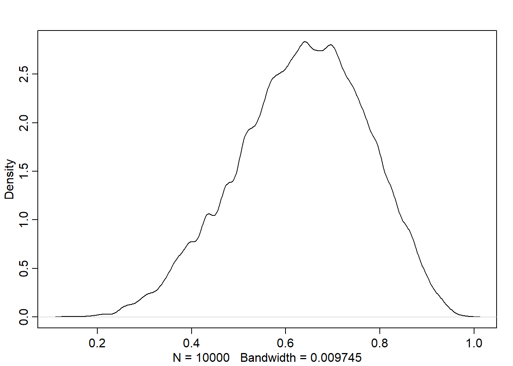
#hist(sort(samples)[2000], breaks = 1000) #don't really get why this doesn't work...
SR3e6
Which values of p contain the narrowest interval equal to 66% of the posterior probability?
rethinking::HPDI(samples, 0.66)
|0.66 0.66|
0.5085085 0.7737738
3M6.
Suppose you want to estimate the Earth’s proportion of water very precisely. Specifically, you want the 99% percentile interval of the posterior distribution of p to be only 0.05 wide. This means the distance between the upper and lower bound of the interval should be 0.05. How many times will you have to toss the globe to do this?
First guess There should be some variance in the n required depending on how your draws end up, right? In simulation this would be “simulation variance” while in sampling it would be sampling variance. My guess is that this should turn out quite similar to normal standard errors, since we have a flat prior. If \(\hat{p}\) is the true proportion and \(x\) is the proportion we find in our sample of \(n\) individuals, the standard error is \(SE=\sqrt{\hat{p}(1-\hat{p})/n}\), we can see here that \(\hat{p}(1-\hat{p})\), meaning that the required \(n\) should vary depending on what \(\hat{p}\) is.
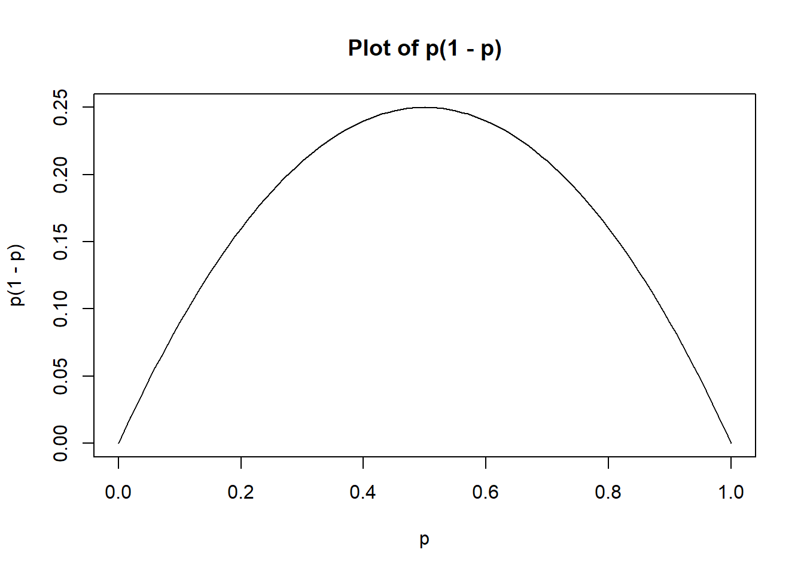
This sort of makes sense if we think of a small sample and very high proportion. Three “W,W,W” would all make the distribution only thinner (taller peak), while then adding a “L” would both make it some mix of taller and wider. Visually at least this feels true to me…
Anyways, to solve for a given \(\hat{p}\) we just need to plug in numbers to the equation and solve for \(n\). So for example for \(\hat{p}=0.4\): \[
\begin{align}
0.05&=2.57*\sqrt{{0.4}(1-{0.4})/n} \\
0.05&=2.57*\sqrt{0.24/n} \\
0.05^2&=2.57^2*\sqrt{0.24/n}^2 \\
0.0025&=6.6049*0.24/n \\
0.0025&=1.585176/n \\
0.0025n&=1.585176 \\
n&=1.585176/0.0025 \\
n &\approx 634?
\end{align}
\]
2.57 is \(\approx\) the z-score in a normal distribution, so we’re using it to get from SE to CI, which may be questionable in this case since with high or low proportions the CI may exceed 1. We can find exact number with ´qnorm(0.995)´. We’re assuming our error is normal.
Also 99% percentile intervals may be pretty different from 99%CI.
Also, as shown in the graph above, this equation may turn out quite different for more skewed proportions. Also: I’m not that sure I’ve gotten the simple middle school algebra right.
Second attempt
Let’s try to code the problem with a loop instead:
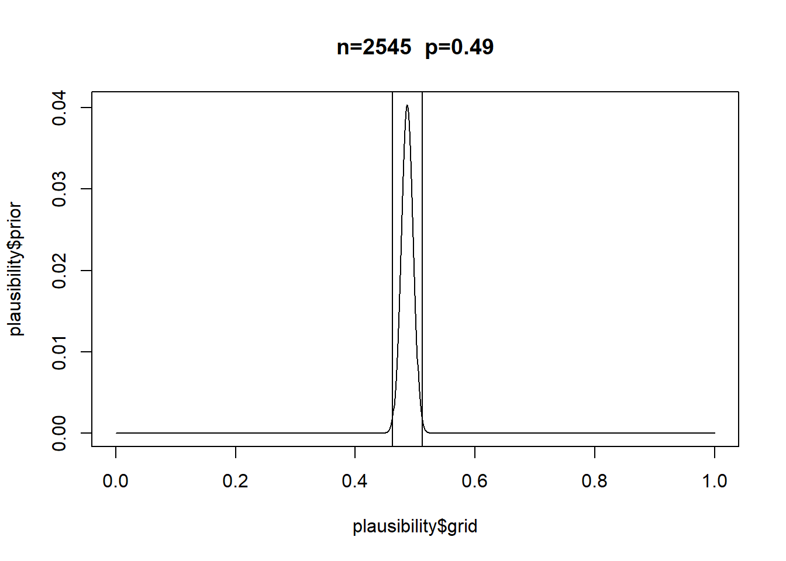
[1] 0.487
However it’s different if p is very skewed.
[1] 0.049
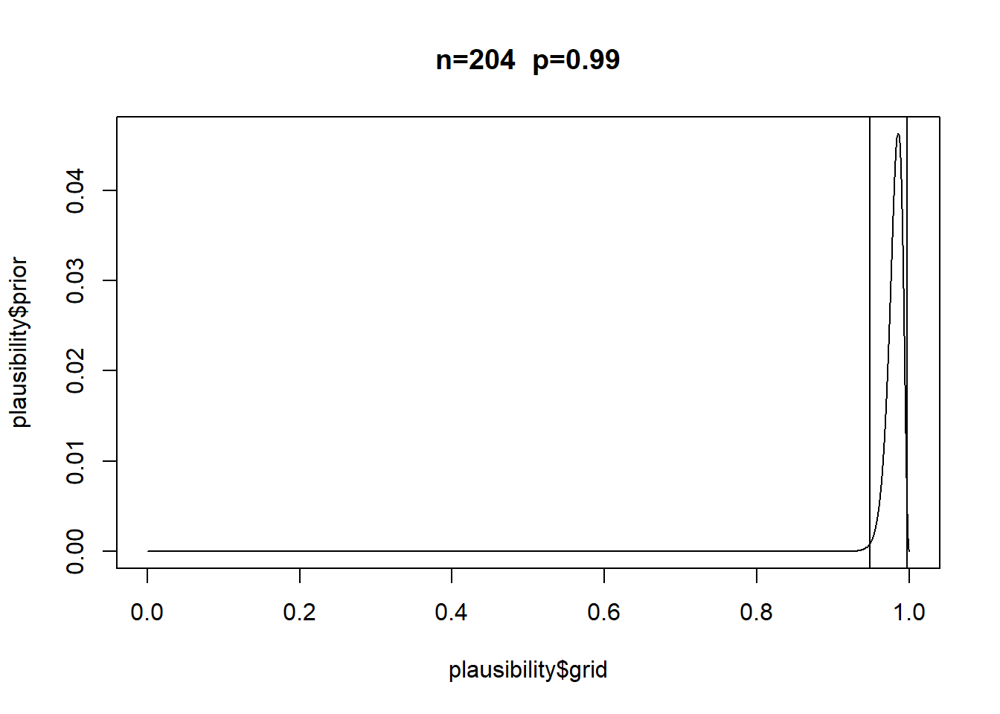
[1] 0.985
Notably it also turns out quite different than my questionable algebraic solution.
Also: Turns out there’s a function in rethinking that does this. PI(x,prob) if I use samples.